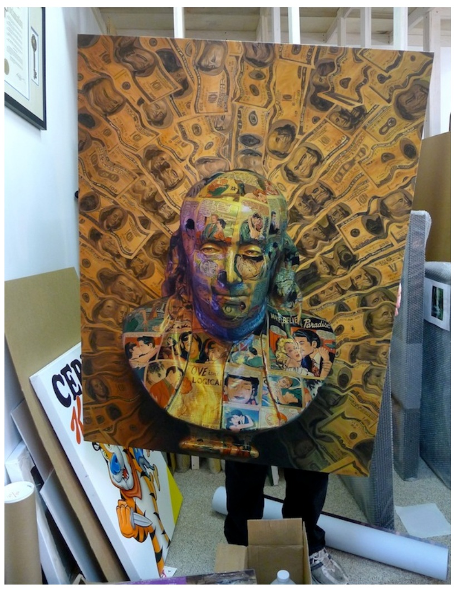
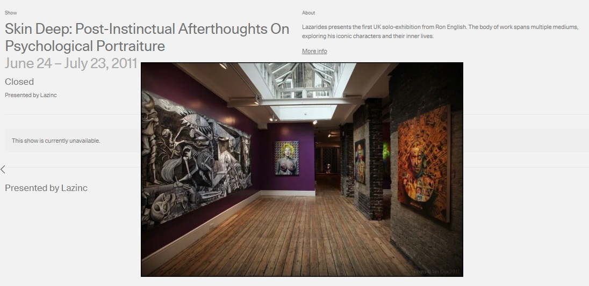
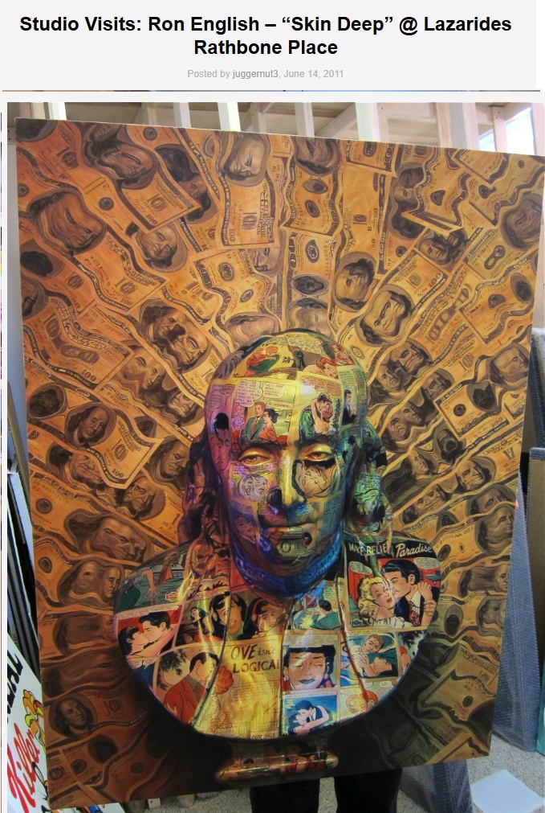

Exhibitions
Skin Deep: Post-Instinctual Afterthoughts on Psychological Portraiture, Lazarides Rathbone, London, UK, June 24–July 23, 2011.
On Every Street, Samuel Owen Gallery, Greenwich, Connecticut, US, October 6–November 3, 2011.
Literature
Ron English, Death and the Eternal Forever (London: Korero Press, 2014), p. 37. ISBN 978-0957664920.

Ron English, Status Factory: The Art of Ron English (San Francisco: Last Gasp of San Francisco, 2014), p. 178. ISBN 978-0867197891.

Ron English, Original Grin: The Art of Ron English (Paris: Cernunnos, 2019), p. 142. ISBN 978-2374950938.

Darien Times On Every Street.

Notes
This work appears on Artsy’s show page for Skin Deep: Post-Instinctual Afterthoughts On Psychological Portraiture, presented by Lazinc.
This work appears in studio photographs published in RJ Rushmore, “Studio visit with Ron English,” Vandalog, June 14, 2011.
Additional studio photographs showing the work were published in juggernut3, “Studio Visits: Ron English – ‘Skin Deep’ @ Lazarides Rathbone Place,” Arrested Motion, June 14, 2011.
The work also appears in “Samuel Owen Gallery hosts street art show,” Darien Times, September 20, 2011.
Ron English assembled and photographed a reference set as a model for this work.
This work appears on Artsy’s show page for Skin Deep: Post-Instinctual Afterthoughts On Psychological Portraiture, presented by Lazinc.
Ancillary Documentation






Selected Online Circulation
Selected examples of the work’s online circulation, reproduction, or discussion. This list is not exhaustive; it is intended to document representative appearances of the image beyond formal exhibition and publication records.
Provenance
Artist's personal collection.